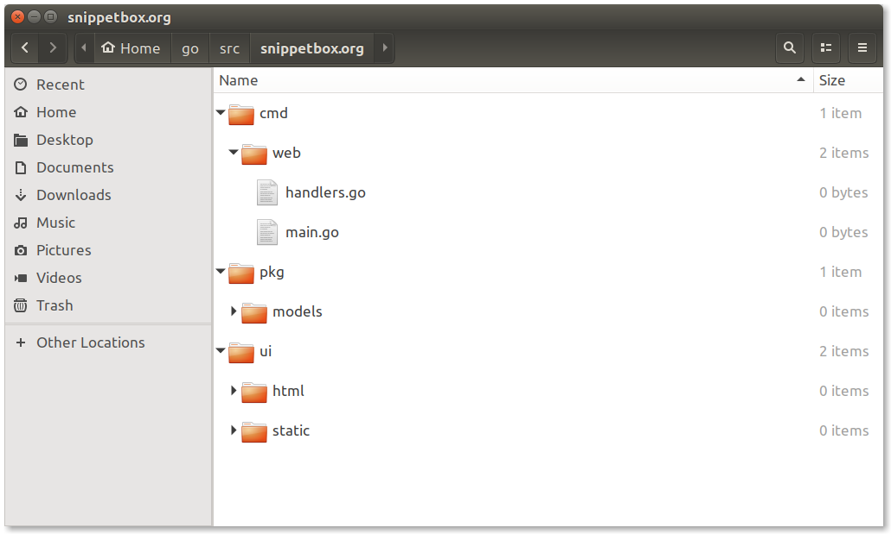

Before we add any more code to our main.go file it's a good time to think about the organization and structure for our project.
There's no single right (or even recommended) way to structure your project in Go. This can be both a blessing and a curse. It means that you have freedom and flexibility over how you organize your code, but you can also spend a lot of time trying to decide what the best structure should be.
For our project we'll use a popular and tried-and-tested approach which should be a good fit for a wide range of applications.
If you're following along, make sure that you're in the root of our project repository and run the following commands to generate an outline structure:
$ cd $HOME/go/src/snippetbox.org $ rm main.go $ mkdir -p cmd/web pkg/models ui/html ui/static $ touch cmd/web/main.go $ touch cmd/web/handlers.go
Once that's done your project repository should look just like this:

So what will each of these directories do?
The cmd directory will contain the source code for our executable applications. For now we're only making one application – the Snippetbox web application – which will live in the cmd/web directory.
The pkg directory will contain the reusable packages that our executable applications will import (a package is like a library in other languages). For now we've got one package directory, models, which will contain all the database models for our project.
There's also a ui directory in our repository root, which will contain our HTML templates and static files (like CSS and images).
A big benefit of this structure is that it scales nicely if your project grows to include multiple executable applications under the cmd directory. The pkg directory provides a sensible place to put shared, reusable, code (like database models) which can be easily imported by your different applications.
During our project build all the Go code we write will live exclusively under either the cmd or pkg directories. Sticking to this rule will help keep our Go and non-Go assets cleanly separated.
Let's quickly port the code we've already written to the new structure.
package main import ( "log" "net/http" ) func main() { mux := http.NewServeMux() mux.HandleFunc("/", Home) log.Println("Starting server on :4000") err := http.ListenAndServe(":4000", mux) log.Fatal(err) }
package main import ( "net/http" ) func Home(w http.ResponseWriter, r *http.Request) { if r.URL.Path != "/" { http.NotFound(w, r) return } w.Write([]byte("Hello from Snippetbox")) }
To start our web application you'll now need to execute go run using a wildcard pattern so that it includes both the main.go and handler.go files:
$ go run cmd/web/*
2017/08/16 21:48:45 Starting server on :4000
As a side-note, it's important to emphasize that you can and should tailor your structure to fit to the project. The outline that we're using is a solid starting point, but as you gain experience with the language you'll get a feel for which patterns work well for you in different situations.
The only firm advice I can give is try hard not to over-complicate things; add structure and complexity only when it's demonstrably needed.